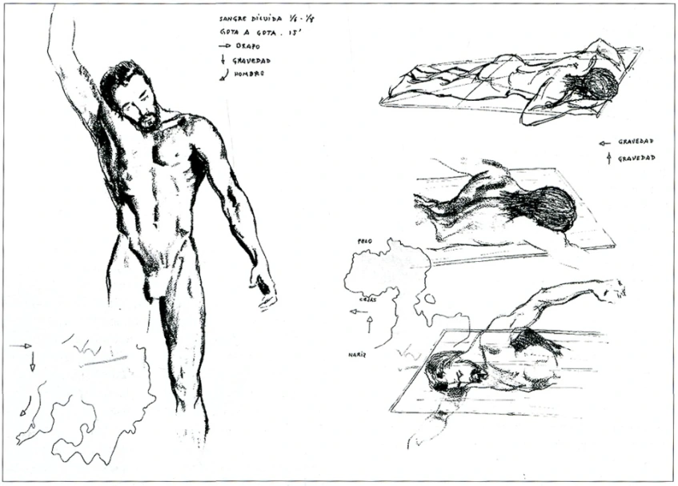
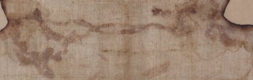
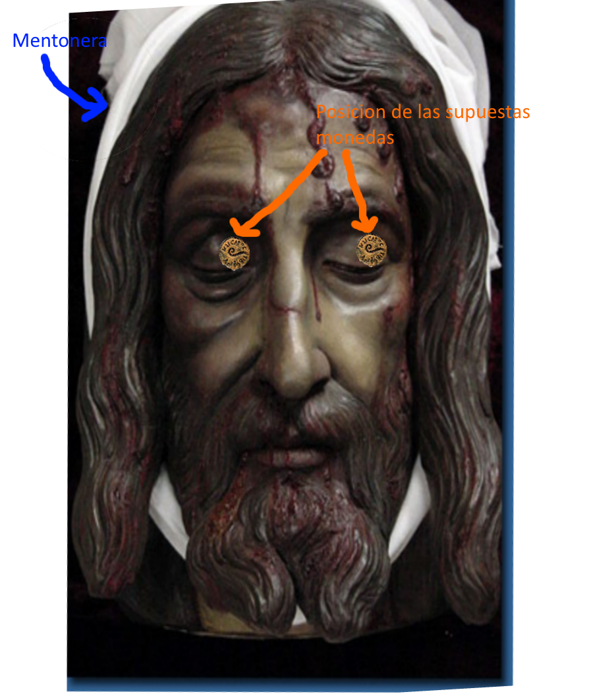
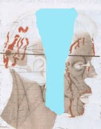
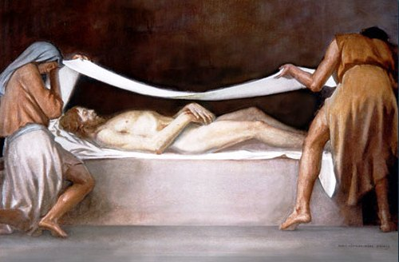
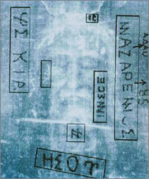

En esta seccion se abrira parentesis para hablar sobre los datos proporcionados por el Sudario de Oviedo
Continuando con la parte forense, al Hombre de la Sindone le colocan un lienzo con mirra y aloe en la cabeza para detener el flujo de sangre mezclada con liquido de provocado por un edema pulmonar
En el primer plano la cabeza estaba inclinada hacia la derecha y recargada sobre el hombro derecho. Al intentar envolverle la cabeza notan que el brazo les impide rodear por completo el lienzo, por lo que hacen un doblez en la tela, generando dos manchas simetricas en el sudario. Cosen con alfileres la tela con la barba y el pelo para mantenerlo fijo durante el proceso, y unen la tela con la parte de la nuca a traves del pelo, formando las manchas en forma de alas de mariposa y tocando posiblemente el punto de salida de la lanza.

Las heridas provocadas por la corona de espinas impregnan el lienzo debido a que se volvian a abrir durante el proceso de la agonia
Despues de desclavar los pies del stipes, retiran el cuerpo aun clavado de los brazos al patibulum, pero con la cabeza inclinada boca abajo, provocando que la sangre fluya hacia la frente por efecto de la gravedad

Finalmente el cuerpo es desclavado, aun bocabajo, logran bajar los brazos, pero las piernas siguen flexionadas por el rigor mortis. Logran envolver la cabeza por completo, dejandole un nudo para el traslado, marcando la oreja derecha.

Durante el traslado al sepulcro se mantine los orificios nasales tapados con una mano para frenar el flujo de sangre, esto debido a que la distancia que habia del lugar de ejecucion (el Golgota) hasta el sepulcro era muy corta, aproximadamente 45 m.

Al llegar al sepulcro se retira el sudario de la cabeza, "enrrollado en un lugar aparte", para proceder a preparar el cuerpo. Se planteo que posiblemente hubieran colocado algunas plantas o flores alrededor del cadaver del Hombre de la Sindone, plantas tipicas de Jerusalen. A la sabana mortuoria o Sindone le aplican aloe, mirra y aceite de helicriso, como conservador para el cadaver.
El codigo de la ley judia (Halaja) indicaba que los cadaveres tenian que estar lavados, con el cabello cortado, sin vello facial y con las uñas cortadas. Sin embargo, si el fallecido fue ajusticiado por el gobierno o el estado, o ha tenido una muerte violenta con derramamiento de sangre, el cadaver no pasaba por el proceso previamente mencionado, solamente se aromatizaba y se envolvia con una sola sabana
En algun punto del traslado se tuvo que poner el cadaver en una posicion horizontal, provocando que la herida del costado emanara sangre hasta la cintura, creando un "cinturon" de sangre
A la cabeza le ponen una mentonera para mantener la boca cerrada, y probablemente le han dejado unas monedas en los ojos
Finalmente envuelven el cadaver en la Sindone, mantenendo fijo el cuerpo con un pedazo de tela extraido de la Sindone para servir como venda
Se ha planteado que posiblemente hayan dejado una especie de certificado de defuncion, indicando la identidad del difunto como "ESOU NAZARENOS" en griego, al igual que otras palabras griegas y en latin. Aun esta en debate si es autentico este hallazgo o no
